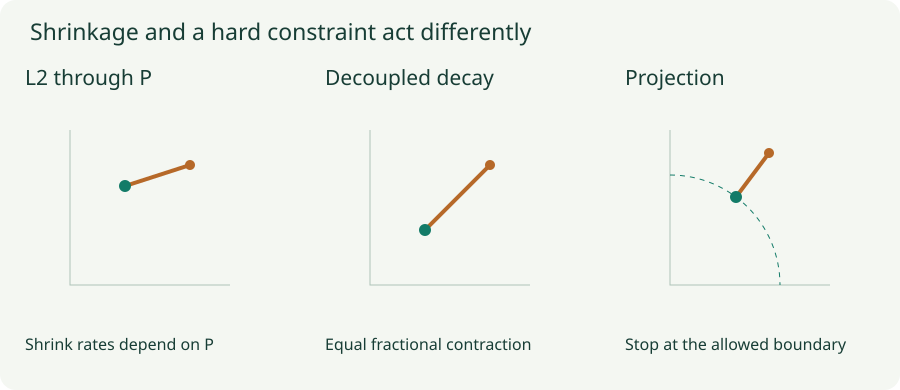

Weight Decay and Norm Constraints: Control the Right Quantity
See why L2 regularization and weight decay diverge in adaptive optimizers, how max-norm projection enforces a hard ball, and how spectral normalization bounds Lipschitz amplification.
We can control parameter scale in three distinct ways: add an L2 penalty $\frac\lambda2\|w\|_2^2$ to the loss, apply direct multiplicative weight decay $(1-\eta\lambda)w$ in the optimizer, or project weights onto a norm constraint after each step. Only in plain SGD do the first two coincide.
1. Plain SGD vs. preconditioned / adaptive updates
Let $g=\nabla L(w)$ be the data gradient. Under plain SGD, adding $\frac\lambda2\|w\|_2^2$ to the loss adds $\lambda w$ to the gradient, which rearranges into direct multiplicative decay:
Now suppose an adaptive optimizer scales coordinates by a diagonal preconditioner $P_t$ (such as $(\sqrt{\widehat v_t}+\epsilon)^{-1}$ in Adam). Comparing coupled L2 against decoupled weight decay (AdamW) shows why they differ:
In coupled L2, the shrinkage factor $\eta\lambda P_t$ is divided by the historical gradient magnitude—so coordinates with large gradients ($P_{ii}$ small) receive less weight decay. Take $w=(2,2)$, $g=(0,0)$, $P=\operatorname{diag}(1,0.1)$, $\eta=0.1$, and $\lambda=0.2$:
- Coupled L2: $w^+=\bigl(2(1-0.02\times 1),\,2(1-0.02\times 0.1)\bigr)=(1.96,\,1.996)$.
- Decoupled weight decay: $w^+=\bigl(2(1-0.02),\,2(1-0.02)\bigr)=(1.96,\,1.96)$.

2. Lab: isolate coupled L2 vs. decoupled shrinkage
Two coordinates, no data gradient
Start at $(2,2)$. The first preconditioner entry is 1; change the second entry and compare 40 updates with learning rate $0.1$. “L2 through P” uses a fixed diagonal preconditioner, not a full Adam run.
3. Max-norm projection: enforce a hard boundary
Instead of shrinking weights at every step—even when they are already small—a max-norm constraint requires $\|w\|_2\le c$ (typically applied separately to each neuron’s incoming weight row). Projected gradient descent takes the unconstrained step $z=w-\eta g$ and projects onto the ball of radius $c$:
For $z=(3,4)$ (so $\|z\|_2=5$) and radius $c=2$, projection rescales $z$ by $2/5$ to $w^+=(1.2,1.6)$. Any proposal already inside $\|z\|_2\le 2$ is left untouched.
4. Spectral normalization: bound layer amplification
Frobenius/L2 norm sums all squared singular values $\|W\|_F^2=\sum_i\sigma_i^2$, whereas the worst-case amplification of a linear layer is its spectral (operator) norm:
Spectral normalization divides the weight matrix by its largest singular value (estimated via 1 step of power iteration $u\leftarrow Wu/\|Wu\|_2$, $v\leftarrow W^\top u/\|W^\top u\|_2$, $\sigma_{\max}\approx u^\top Wv$ per forward pass):
For example, $W=\operatorname{diag}(3,1)$ has $\sigma_{\max}(W)=3$; normalizing to $c=1$ produces $\bar W=\operatorname{diag}(1,1/3)$, guaranteeing the layer is $1$-Lipschitz while preserving the ratio of its singular values.
| Operation | Formula / Rule | What it controls |
|---|---|---|
| Decoupled weight decay | $w\leftarrow(1-\eta\lambda)w-\eta P_tg$ | Uniform fractional parameter shrinkage per step. |
| Max-norm projection | $w\leftarrow z\min(1,c/\|z\|_2)$ | Hard upper bound $c$ on a weight vector’s Euclidean norm. |
| Spectral normalization | $\bar W=W/\sigma_{\max}(W)$ | Worst-case directional amplification (Lipschitz constant $\le 1$). |
| Gradient clipping | $g\leftarrow g\min(1,\tau/\|g\|_2)$ | Single-step update size $\eta\|g\|_2$, not the parameter norm $\|w\|_2$. |
5. Questions worth answering
Because adding $\lambda w$ to the loss gradient feeds $\lambda w$ into Adam’s $m_t$ and $v_t$ buffers and divides the penalty by $\sqrt{\widehat v_t}$, shrinking high-gradient weights less than low-gradient weights.
No. Gradient clipping bounds the step size $\|\Delta w\|_2\le\eta\tau$ on each update, but many small steps in the same direction can still grow $\|w\|_2$ arbitrarily large.
Sources
Loshchilov and Hutter, Decoupled Weight Decay Regularization; Miyato et al., Spectral Normalization for Generative Adversarial Networks.